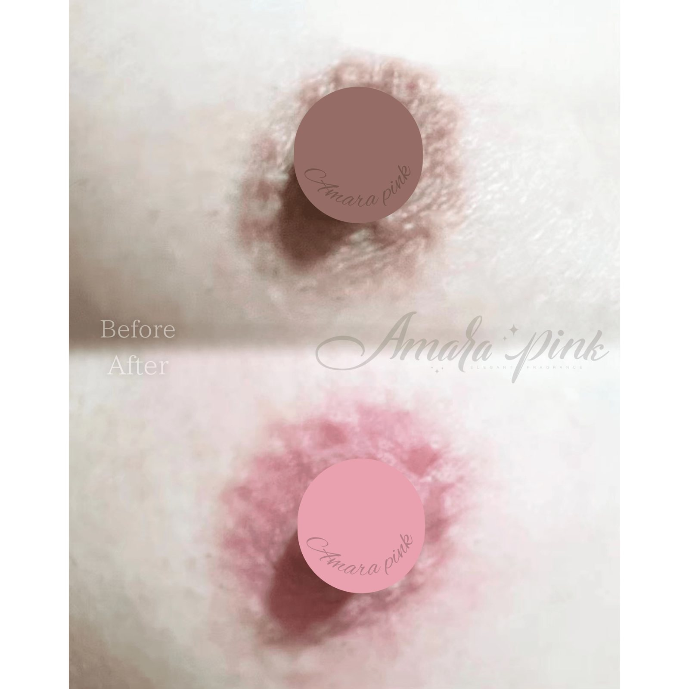
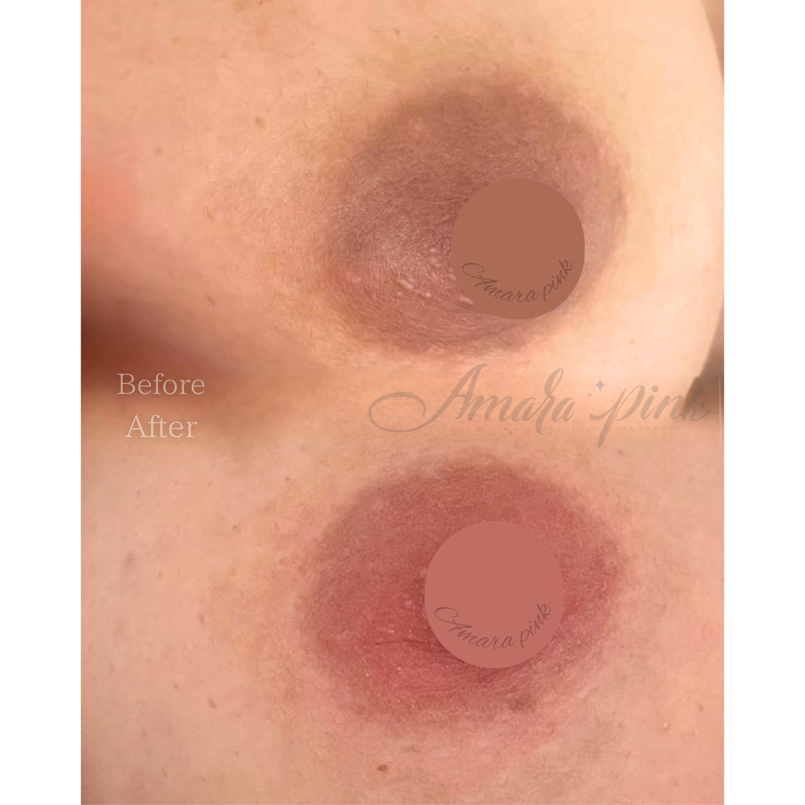
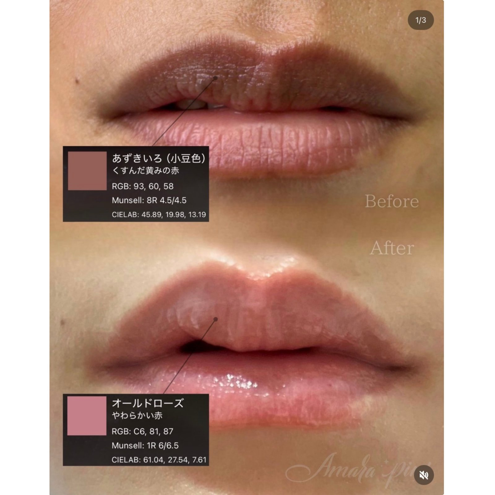
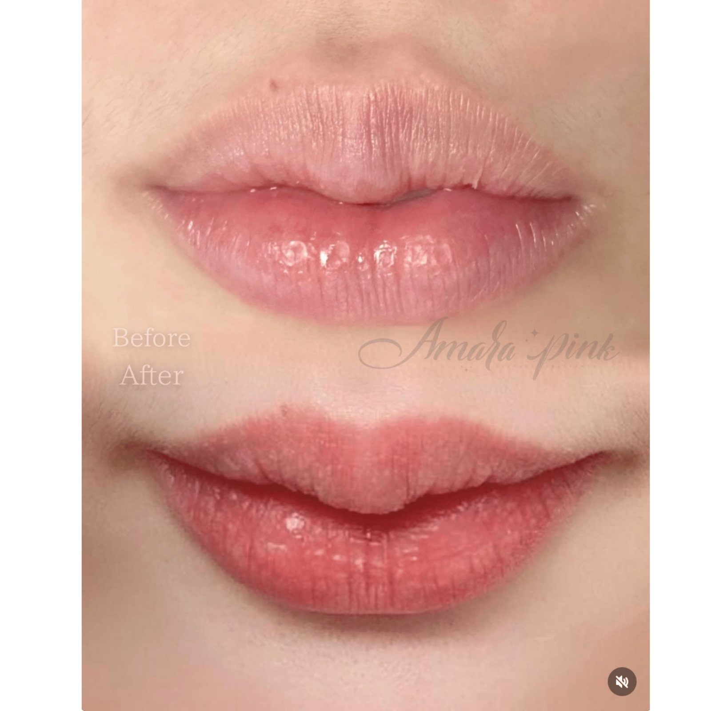
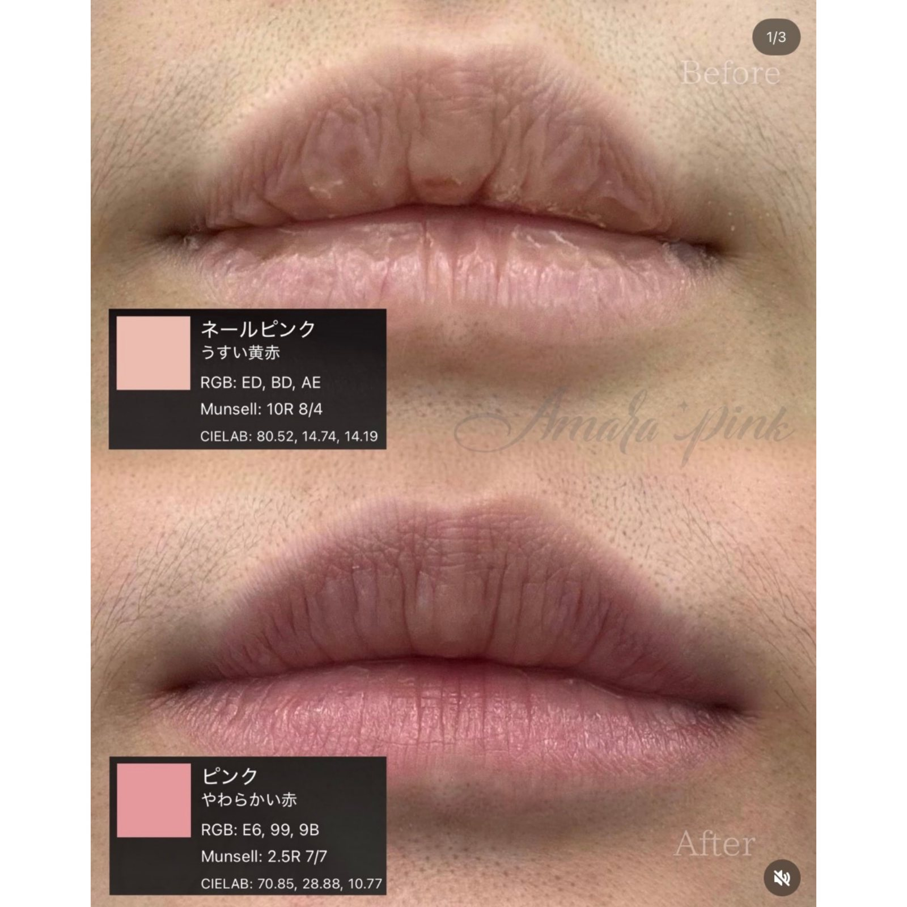
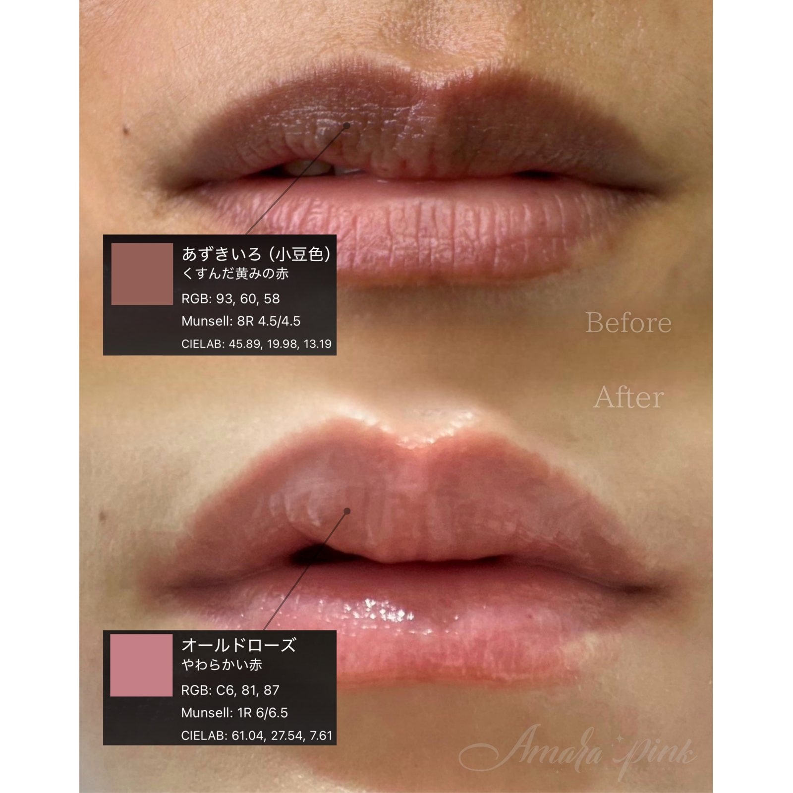
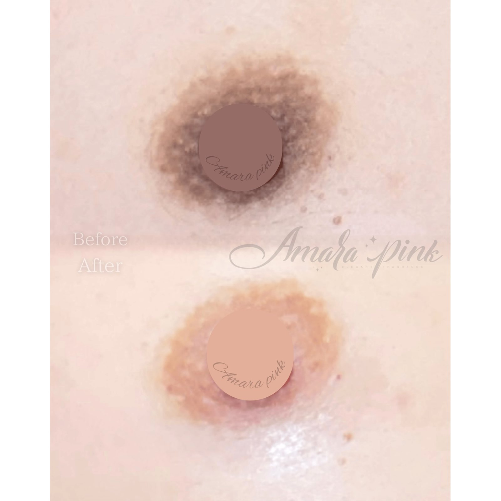

Amarapink Cases
色素沈着・黒ずみのトーン補整の仕上がり実例
アマラピンクは、色素沈着・黒ずみが気になる部位に医療アートメイクの技術でトーンを補整する施術です。デリケートな部位のくすみのお悩みに用いられます。施術部位・状態により回数や費用が変わります。その仕上がり実例を掲載しています。
※掲載写真はご本人の同意をいただいた施術実例です。個人が特定されないよう配慮しています。施術結果には個人差があり、効果を保証するものではありません。施術の適否・リスクの詳細はカウンセリングでご説明します。







随時、アマラピンクの症例を追加しています。InstagramでもBefore/Afterをご覧いただけます。
→ Instagramはこちら